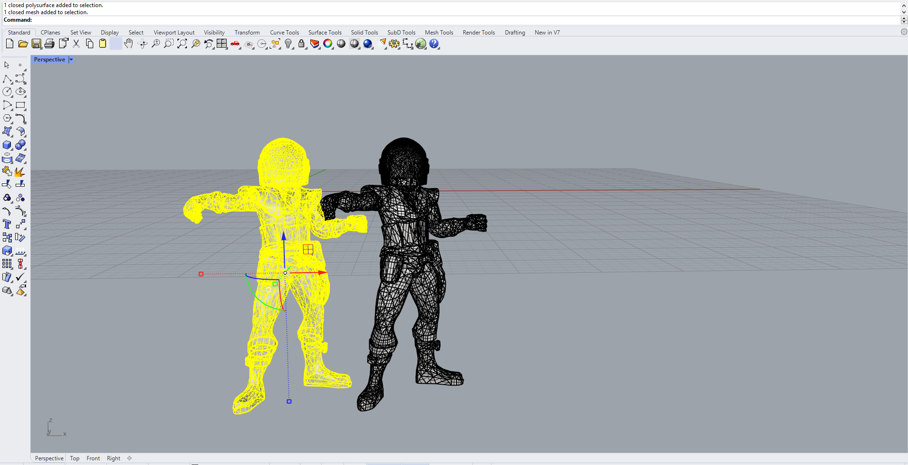
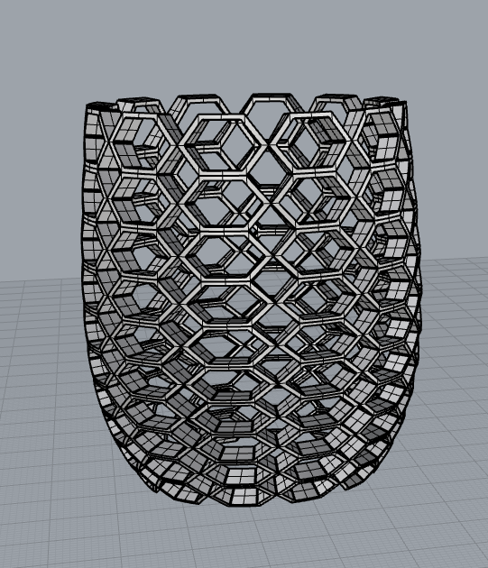

For the first part of the assignment, I used two stl files from thingaverse: guy Manuel's helmet from daft punk and placed it on top of Swashbuckler D&D figure . I ruthlessly used MeshBooleanDifference along with a surface to cut the figure's head and placed Manuel's helmet in its place and then used MeshBooleanUnion to connect the two. I did have to reduce the meshes to 6000 polygons to make it easier to work with. I also had to scale the helmet to fit on the figure's head.

Next part of the assignment was about starting my Lamp design Idea for next week. I was not sure how I wanted to tackle this problem so I looked around for inspiration whether it was from the lecture slides or through google searches and I liked about the lamps that I saw was that they all had patterns through out their design. So after measuring the diameter of innereds which 37mm I created the base of my lamp to be 36 mm so I can use the PLA's flexibility along with the geometry I used to hold it. The main issue I faced was getting the pattern to look presentable because it would rely on the number of shapes I used in the rectangular array. This was exteremly time consuming because I refused to use grasshopper for pride reasons and reflecting on this I was being a dumb baby. For my shape I experimented with a couple of shapes such as a star and an ellipse but ended up on a hexagon for personal preference. to get the pattern on the lamp I used flow along surface command in Rhino. I have not started printing the lamp but I generated the gcode for it using cura and it is looking like its going to take 5 hours to print
